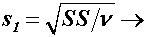

|
2.
Measurement Process Characterization
2.4. Gauge R & R studies 2.4.4. Analysis of variability 2.4.4.4.
|
|||
| Example of repeatability calculations |
Short-term standard deviations based on
|
||
| Source of variability |
| Degrees of freedom (DF) | Std Devs |
| Repeatability |  | ||
Wafer #138 Wafer #139 Wafer #140 Wafer #141 Wafer #142 |
0.48115
|
60
|
|